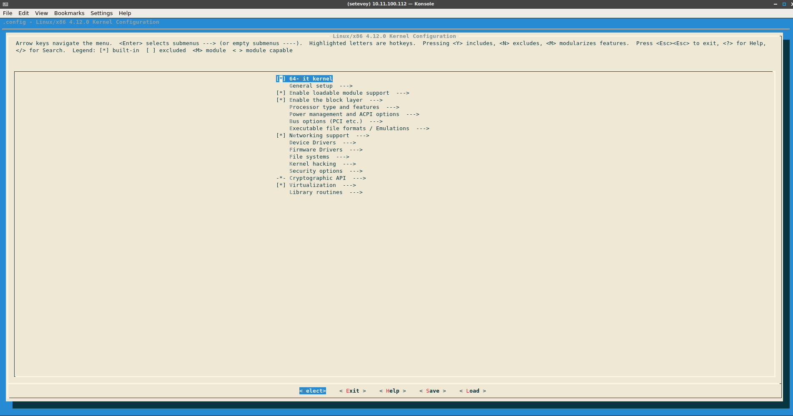
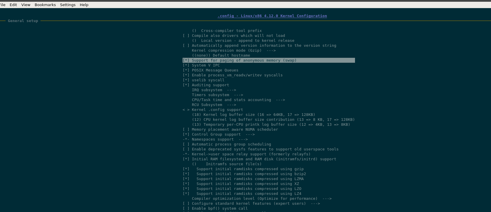
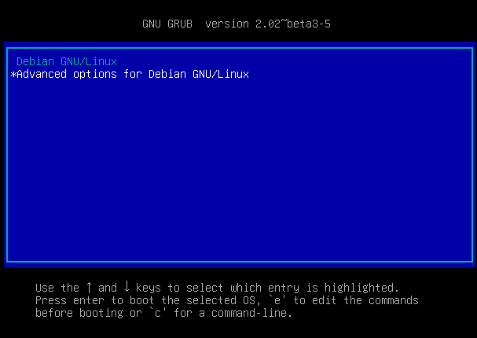
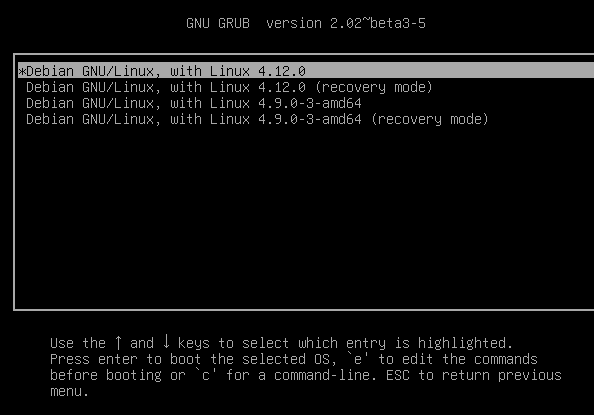

Автор: setevoy | 08/14/2017
Собирать и запускать ядро будем в виртуальной машине, например — Virtualbox: создание и запуск VM из консоли (только с диском 20+ гб).
Установка выполняется на:
root@debian:# lsb_release -a
No LSB modules are available.
Distributor ID: Debian
Description: Debian GNU/Linux 9.1 (stretch)
Release: 9.1
Codename: stretch
С ядром:
setevoy@debian:~$ uname -a
Linux debian 4.9.0-3-amd64 #1 SMP Debian 4.9.30-2+deb9u3 (2017-08-06) x86_64 GNU/Linux
Устанавливаем пакеты:
root@debian:/home/setevoy# apt install build-essential libncurses5-dev gcc binutils libssl-dev bc vim git
Проверяем содержимое /boot:
root@debian:/home/setevoy# ls -l /boot/
total 24968
-rw-r--r-- 1 root root 186386 Aug 6 00:24 config-4.9.0-3-amd64
drwxr-xr-x 5 root root 4096 Aug 14 03:52 grub
-rw-r--r-- 1 root root 17983274 Aug 14 03:44 initrd.img-4.9.0-3-amd64
-rw-r--r-- 1 root root 3180929 Aug 6 00:24 System.map-4.9.0-3-amd64
-rw-r--r-- 1 root root 4204320 Aug 6 00:24 vmlinuz-4.9.0-3-amd64
Загружаем исходные коды ядра, последнюю версию находим тут>>>:
cd /usr/src
wget https://cdn.kernel.org/pub/linux/kernel/v4.x/linux-4.12.tar.gz
root@debian:/usr/src# ls -lh linux-4.12.tar.gz
-rw-r--r-- 1 root root 145M Jul 2 19:25 linux-4.12.tar.gz
tar xfp linux-4.12.tar.gz
cd linux-4.12
Содержимое:
root@debian:/usr/src/linux-4.12# ls -l
total 696
drwxrwxr-x 32 root root 4096 Jul 2 19:07 arch
drwxrwxr-x 3 root root 4096 Jul 2 19:07 block
drwxrwxr-x 2 root root 4096 Jul 2 19:07 certs
...
drwxrwxr-x 4 root root 4096 Jul 2 19:07 virt
Основные каталоги тут:
Текущая конфигурация ядра хранится в /boot/config-{kernel}-{arch}:
head /boot/config-4.9.0-3-amd64
Automatically generated file; DO NOT EDIT.
Linux/x86 4.9.30 Kernel Configuration
CONFIG_64BIT=y
CONFIG_X86_64=y
CONFIG_X86=y
CONFIG_INSTRUCTION_DECODER=y
CONFIG_OUTPUT_FORMAT="elf64-x86-64"
CONFIG_ARCH_DEFCONFIG="arch/x86/configs/x86_64_defconfig"
Полезные команды для проверки аппаратного обеспечения на машине:
Для настройки параметров сборки ядра есть два варианта — использовать существующий, /boot/config-4.9.0-3-amd64 в данном случае, или создать новый.
Параметры ядра могут быть типа boolean (yes/no) либо tristate (yes/no/module). В случае с tristate параметрами, если параметр указан как module — то соответсвующий модуль будет собран в виде динамически подключаемого модуля ядра, а не скомпилирован в сам файл ядра (yes). tristate используется как правило для драйверов.
При этом некоторые параметры могут содержать не boolean или tristate значения, а данные, которые будут использованы в качестве директив препроцессору перед сборкой ядра.
Для конфигурации ядра можно использовать:
Выполнение defconfig занимает пару секунд:
time make defconfig
*** Default configuration is based on 'x86_64_defconfig'
configuration written to .config
real 0m0.448s
user 0m0.204s
sys 0m0.036s
Что бы использовать имеющийся файл — копируем его в текущую директорию с именем .config:
cp /boot/config-4.9.0-3-amd64 .config
И выполняем make oldconfig — make вызовет scripts/kconfig/conf, проверит все config файлы в каталоге с исходниками нового ядра, сравнит опции в них со старым конфигом ипредложит внести изменения, например:
make oldconfig
HOSTCC scripts/basic/fixdep
HOSTCC scripts/kconfig/conf.o
SHIPPED scripts/kconfig/zconf.tab.c
SHIPPED scripts/kconfig/zconf.lex.c
SHIPPED scripts/kconfig/zconf.hash.c
HOSTCC scripts/kconfig/zconf.tab.o
HOSTLD scripts/kconfig/conf
scripts/kconfig/conf --oldconfig Kconfig
...
BSD Process Accounting (BSD_PROCESS_ACCT) [Y/n/?] y
BSD Process Accounting version 3 file format (BSD_PROCESS_ACCT_V3) [Y/n/?] y
Export task/process statistics through netlink (TASKSTATS) [Y/?] y
Enable per-task delay accounting (TASK_DELAY_ACCT) [Y/?] y
Enable extended accounting over taskstats (TASK_XACCT) [Y/n/?] y
Enable per-task storage I/O accounting (TASK_IO_ACCOUNTING) [Y/n/?] y
*
* RCU Subsystem
*
Make expert-level adjustments to RCU configuration (RCU_EXPERT) [N/y/?] n
Kernel .config support (IKCONFIG) [N/m/y/?] n
Kernel log buffer size (16 => 64KB, 17 => 128KB) (LOG_BUF_SHIFT) [17] 17
CPU kernel log buffer size contribution (13 => 8 KB, 17 => 128KB) (LOG_CPU_MAX_BUF_SHIFT) [12] 12
Temporary per-CPU printk log buffer size (12 => 4KB, 13 => 8KB) (PRINTK_SAFE_LOG_BUF_SHIFT) [13] (NEW)
...
Описание параметра CONFIG_PRINTK_SAFE_LOG_BUF_SHIFT можно найти в базе>>>.
Другой пример — поддержка RDMA:
...
Control Group support (CGROUPS) [Y/?] y
Memory controller (MEMCG) [Y/n/?] y
Swap controller (MEMCG_SWAP) [Y/n/?] y
Swap controller enabled by default (MEMCG_SWAP_ENABLED) [N/y/?] n
IO controller (BLK_CGROUP) [Y/n/?] y
IO controller debugging (DEBUG_BLK_CGROUP) [N/y/?] n
*
* CPU controller
*
CPU controller (CGROUP_SCHED) [Y/?] y
Group scheduling for SCHED_OTHER (FAIR_GROUP_SCHED) [Y] y
CPU bandwidth provisioning for FAIR_GROUP_SCHED (CFS_BANDWIDTH) [Y/n/?] y
Group scheduling for SCHED_RR/FIFO (RT_GROUP_SCHED) [N/y/?] n
PIDs controller (CGROUP_PIDS) [Y/n/?] y
RDMA controller (CGROUP_RDMA) [N/y/?] (NEW)
...
Очевидно, ччто на виртуальной машинке RDMA не нужен, оставляем по умолчанию, т.е. N.
Другой пример old/new параметров ядра:
...
PCI support (PCI) [Y/n/?] y
Support mmconfig PCI config space access (PCI_MMCONFIG) [Y/n] y
Read CNB20LE Host Bridge Windows (PCI_CNB20LE_QUIRK) [N/y/?] n
PCI Express Port Bus support (PCIEPORTBUS) [Y/n/?] y
PCI Express Hotplug driver (HOTPLUG_PCI_PCIE) [Y/n/?] y
Root Port Advanced Error Reporting support (PCIEAER) [Y/n/?] y
PCI Express ECRC settings control (PCIE_ECRC) [N/y/?] n
PCIe AER error injector support (PCIEAER_INJECT) [M/n/y/?] m
PCI Express ASPM control (PCIEASPM) [Y/n/?] y
Debug PCI Express ASPM (PCIEASPM_DEBUG) [N/y/?] n
Default ASPM policy
> 1. BIOS default (PCIEASPM_DEFAULT)
2. Powersave (PCIEASPM_POWERSAVE)
3. Power Supersave (PCIEASPM_POWER_SUPERSAVE) (NEW)
4. Performance (PCIEASPM_PERFORMANCE)
...
Неплохое описание ASPM есть тут>>> (2011 год).
...
configuration written to .config
Кол-во опций:
root@debian:/usr/src/linux-4.12# cat .config | grep CONFIG | wc -l
6918
Другой вариант — использовать псевдо-GUI:
root@debian:/usr/src/linux-4.12# make menuconfig 
Или nconfig:

При изменении конфигцраии разными методами — не забываем выполнять make mrproper или make clean:
root@debian:/usr/src/linux-4.12# make mrproper
CLEAN scripts/basic
CLEAN scripts/kconfig
CLEAN .config .config.old
Вызываем make, опционально указав -j и кол-во ядер:
root@debian:/usr/src/linux-4.12# cat /proc/cpuinfo | grep cores
cpu cores : 1
Либо — с помощью nproc:
root@debian:/usr/src/linux-4.12# nproc
1
В данном случае указывать работу в несколько потоков смысла не имеет, т.к. ядро всё-равно одно, выполняем:
root@debian:/usr/src/linux-4.12# time make
scripts/kconfig/conf --silentoldconfig Kconfig
SYSTBL arch/x86/entry/syscalls/../../include/generated/asm/syscalls_32.h
SYSHDR arch/x86/entry/syscalls/../../include/generated/asm/unistd_32_ia32.h
SYSHDR arch/x86/entry/syscalls/../../include/generated/asm/unistd_64_x32.h
SYSTBL arch/x86/entry/syscalls/../../include/generated/asm/syscalls_64.h
HYPERCALLS arch/x86/entry/syscalls/../../include/generated/asm/xen-hypercalls.h
SYSHDR arch/x86/entry/syscalls/../../include/generated/uapi/asm/unistd_32.h
SYSHDR arch/x86/entry/syscalls/../../include/generated/uapi/asm/unistd_64.h
SYSHDR arch/x86/entry/syscalls/../../include/generated/uapi/asm/unistd_x32.h
HOSTCC scripts/basic/bin2c
HOSTCC arch/x86/tools/relocs_32.o
HOSTCC arch/x86/tools/relocs_64.o
HOSTCC arch/x86/tools/relocs_common.o
HOSTLD arch/x86/tools/relocs
...
Setup is 15772 bytes (padded to 15872 bytes).
System is 7053 kB
CRC 81e3390a
Kernel: arch/x86/boot/bzImage is ready (#1)
Building modules, stage 2.
MODPOST 18 modules
CC drivers/thermal/x86_pkg_temp_thermal.mod.o
LD [M] drivers/thermal/x86_pkg_temp_thermal.ko
CC fs/efivarfs/efivarfs.mod.o
LD [M] fs/efivarfs/efivarfs.ko
CC net/ipv4/netfilter/ipt_MASQUERADE.mod.o
LD [M] net/ipv4/netfilter/ipt_MASQUERADE.ko
...
CC net/netfilter/xt_nat.mod.o
LD [M] net/netfilter/xt_nat.ko
real 17m47.960s
user 14m47.952s
sys 2m19.884s
Далее — выполняем modules_install:
root@debian:/usr/src/linux-4.12# make modules_install
INSTALL drivers/thermal/x86_pkg_temp_thermal.ko
INSTALL fs/efivarfs/efivarfs.ko
INSTALL net/ipv4/netfilter/ipt_MASQUERADE.ko
INSTALL net/ipv4/netfilter/iptable_nat.ko
...
INSTALL net/netfilter/xt_addrtype.ko
INSTALL net/netfilter/xt_mark.ko
INSTALL net/netfilter/xt_nat.ko
DEPMOD 4.12.0
И выполняем установку самого ядра:
make install
sh ./arch/x86/boot/install.sh 4.12.0 arch/x86/boot/bzImage \
System.map "/boot"
run-parts: executing /etc/kernel/postinst.d/apt-auto-removal 4.12.0 /boot/vmlinuz-4.12.0
run-parts: executing /etc/kernel/postinst.d/initramfs-tools 4.12.0 /boot/vmlinuz-4.12.0
update-initramfs: Generating /boot/initrd.img-4.12.0
run-parts: executing /etc/kernel/postinst.d/zz-update-grub 4.12.0 /boot/vmlinuz-4.12.0
Generating grub configuration file ...
Found linux image: /boot/vmlinuz-4.12.0
Found initrd image: /boot/initrd.img-4.12.0
Found linux image: /boot/vmlinuz-4.9.0-3-amd64
Found initrd image: /boot/initrd.img-4.9.0-3-amd64
done
Проверяем:
ls -l /boot/ | grep 12
-rw-r--r-- 1 root root 113426 Aug 14 05:43 config-4.12.0
-rw-r--r-- 1 root root 3792548 Aug 14 05:43 initrd.img-4.12.0
-rw-r--r-- 1 root root 3740599 Aug 14 05:43 System.map-4.12.0
-rw-r--r-- 1 root root 7237584 Aug 14 05:43 vmlinuz-4.12.0
Настройки загрузчика должны обновиться во время выполнения make install:
make install
...
run-parts: executing /etc/kernel/postinst.d/zz-update-grub 4.12.0 /boot/vmlinuz-4.12.0
Generating grub configuration file ...
...
Проверяем:
cat /boot/grub/grub.cfg | grep 12
insmod ieee1275_fb
echo 'Loading Linux 4.12.0 ...'
linux /boot/vmlinuz-4.12.0 root=UUID=579648b1-9b04-47d2-a530-f5f46de18b1a ro quiet
initrd /boot/initrd.img-4.12.0
menuentry 'Debian GNU/Linux, with Linux 4.12.0' --class debian --class gnu-linux --class gnu --class os $menuentry_id_option 'gnulinux-4.12.0-advanced-579648b1-9b04-47d2-a530-f5f46de18b1a' {
echo 'Loading Linux 4.12.0 ...'
linux /boot/vmlinuz-4.12.0 root=UUID=579648b1-9b04-47d2-a530-f5f46de18b1a ro quiet
initrd /boot/initrd.img-4.12.0
menuentry 'Debian GNU/Linux, with Linux 4.12.0 (recovery mode)' --class debian --class gnu-linux --class gnu --class os $menuentry_id_option 'gnulinux-4.12.0-recovery-579648b1-9b04-47d2-a530-f5f46de18b1a' {
echo 'Loading Linux 4.12.0 ...'
linux /boot/vmlinuz-4.12.0 root=UUID=579648b1-9b04-47d2-a530-f5f46de18b1a ro single
initrd /boot/initrd.img-4.12.0
При необходимости — обновляем конфиг с помощью update_grub:
update-grub
Generating grub configuration file ...
Found linux image: /boot/vmlinuz-4.12.0
Found initrd image: /boot/initrd.img-4.12.0
Found linux image: /boot/vmlinuz-4.9.0-3-amd64
Found initrd image: /boot/initrd.img-4.9.0-3-amd64
done
Перезапускаем машину, и загружаемся с новым ядром:
 
Проверяем:
setevoy@debian:~$ uname -a
Linux debian 4.12.0 #1 SMP Mon Aug 14 05:09:02 EDT 2017 x86_64 GNU/Linux
Готово.
Ссылки по теме
How to build and install the latest Linux kernel from source
Custom kernels in Ubuntu/Debian — how, when and why
In-depth HOWTO on Linux kernel configuration
Custom Compiled Kernel on Debian & Ubuntu
How to Compile and Install Linux Kernel v4.9.11 Source On a Debian / Ubuntu Linux